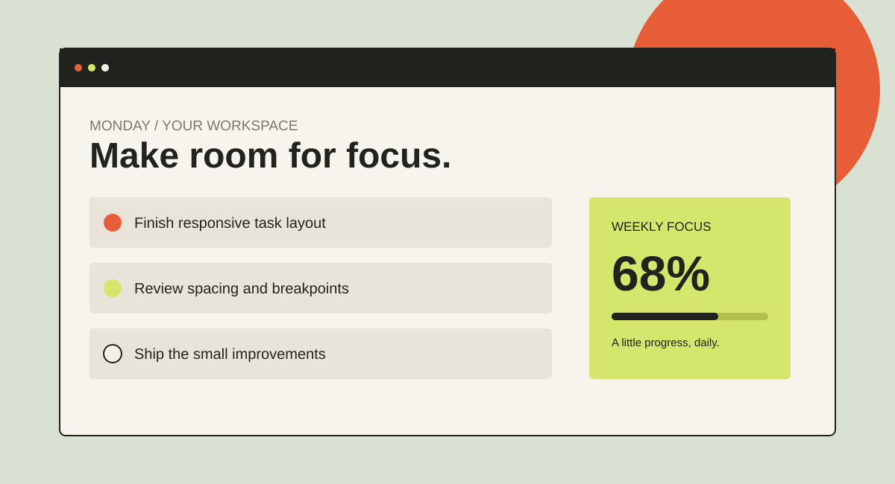
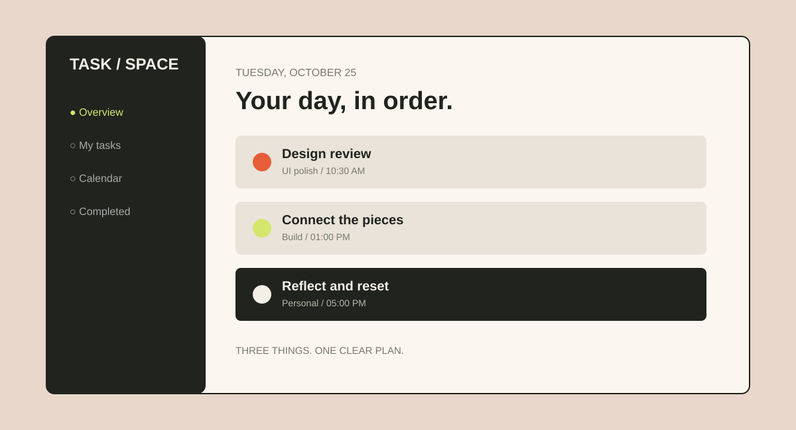
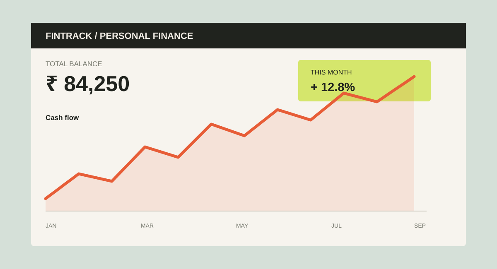
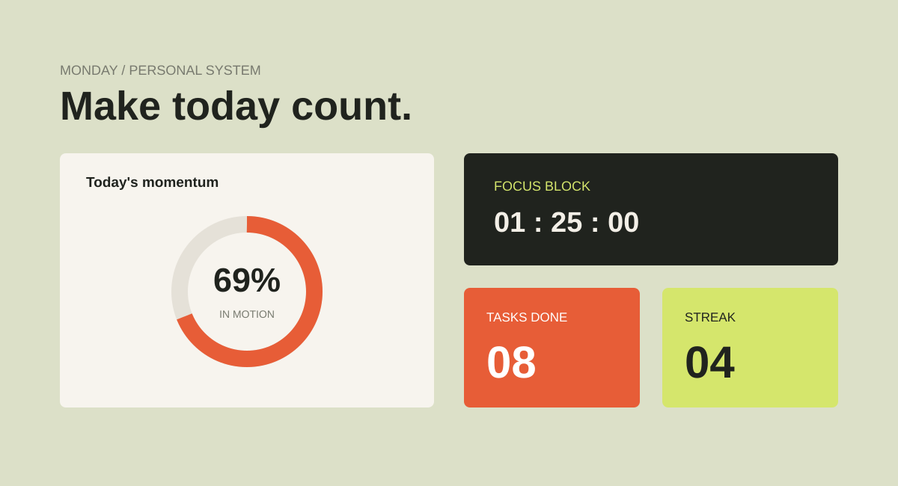
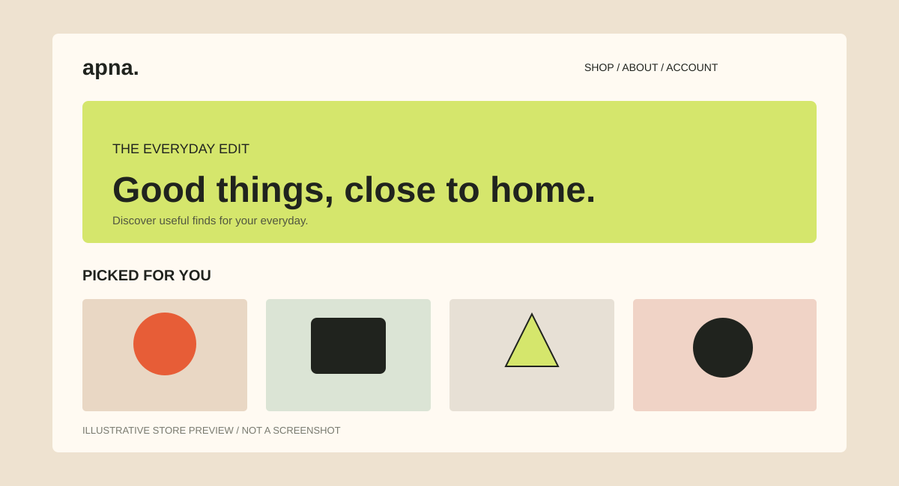
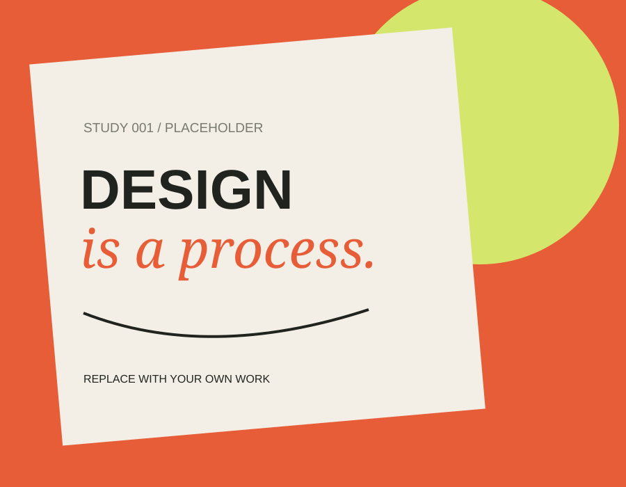
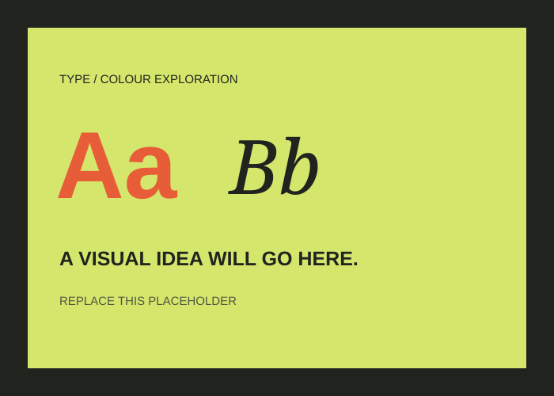
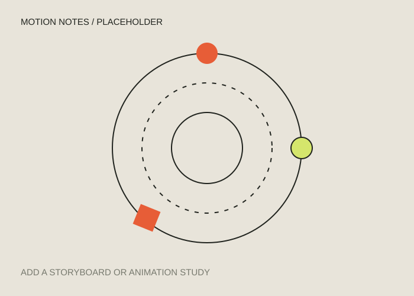

PROJECT 01 / TASKS01 — 05

CUSTOM PREVIEW
NOT A LIVE SCREENSHOT
NOT A LIVE SCREENSHOT
RESPONSIVE INTERFACE
Responsive
Task
A focused task interface built to practice responsive layouts and clean interaction patterns.
HELLO, I'M ANUJA — DEVELOPER & CURIOUS BUILDER
I build thoughtful digital experiences
with code, curiosity, and a little motion.
FULL STACK
DEVELOPER ✳
I'm Anuja Annasaheb Jangale, a full stack developer fascinated by how ideas become interactive experiences.
I enjoy turning a blank screen into something useful, clear, and full of character. Lately, I'm exploring GSAP to understand how movement can guide attention, tell a story, and make interfaces feel more human.
I'm still learning, building, breaking things, and getting better with every project. I believe good development is equal parts problem-solving and curiosity.
A FEW THINGS I'VE BUILT ↘A practical toolkit for building interfaces, connecting data, and adding purposeful motion.
A few projects where I practiced layout, state, data, and product thinking. Scroll to move through the collection.

RESPONSIVE INTERFACE
A focused task interface built to practice responsive layouts and clean interaction patterns.

PRODUCTIVITY TOOL
A task management project for organizing work into a more structured, usable flow.

FINANCE DASHBOARD CONCEPT
A finance-themed interface exploring dashboard hierarchy, summaries, and data presentation.

PRODUCTIVITY DASHBOARD
A dashboard concept that brings daily progress and planning into one visual workspace.

ECOMMERCE EXPERIENCE
An ecommerce project exploring product discovery, account flows, and shopping interactions.
A flexible wall for UI explorations, sketches, and visual experiments.



This little lab is where I test timing, easing, and interaction. Press the button to replay the motion study.
TIMELINE READY IDLE
Give each movement room to land.
Motion should guide the eye, not compete for it.
A small detail can be more powerful than everything moving.
Always learning, always building. Connect with me and let’s make something useful.